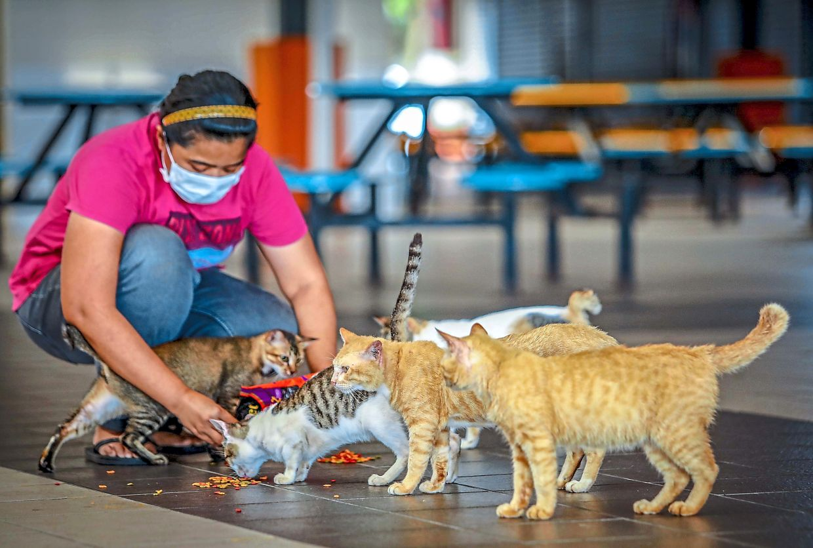

WHO ARE WE?

Founded in 2009, Pets To Go is a non-profit and Springfield’s only no-kill animal shelter. Since it’s opening Pets to Go has placed an estimated 18,000 homeless cats and dogs in new households.
Pet’s To Go works in conjunction with the Animal Rescue League location services to locate the original owners of lost pets as well as finding new homes for abandoned animals. Pet’s To Go is relies on donations from United way, private donations, and volunteers to operate this facility.
UPCOMING EVENTS

Saturday, March 5th:
Our annual Adopt-A-Rama Open House from 10:00 AM to 4:00 PM.
Monday, March 14th:
Volunteer training from 6:30 PM to 8:00 PM.
Tuesday, March 15th:
Obedience 101 class from 6:30 PM to 7:30 PM. You must be enrolled to attend.
HOURS
Sunday: 12:00 PM - 5:00 PM
Monday: 10:00 AM - 7:00 PM
Tuesday: 10:00 AM - 7:00 PM
Wednesday: 10:00 AM - 7:00 PM
Thursday: 10:00 AM - 7:00 PM
Friday: 10:00 AM - 4:00 PM
Saturday: 9:00 AM - 5:00 PM
CONTACT INFORMATION
Address
Pets To Go Animal Shelter
3183 S Veterans Pkway
Springfield, Illinois 62704
Phone
(217) 698-3091
FINANCIAL DONATIONS
Pets To Go solely operates on donations from outside parties.
If you wish to contribute to our mission, please contact us through the Contact Form page or by using the information provided above.